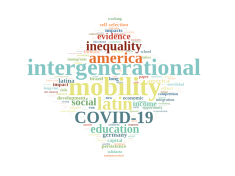
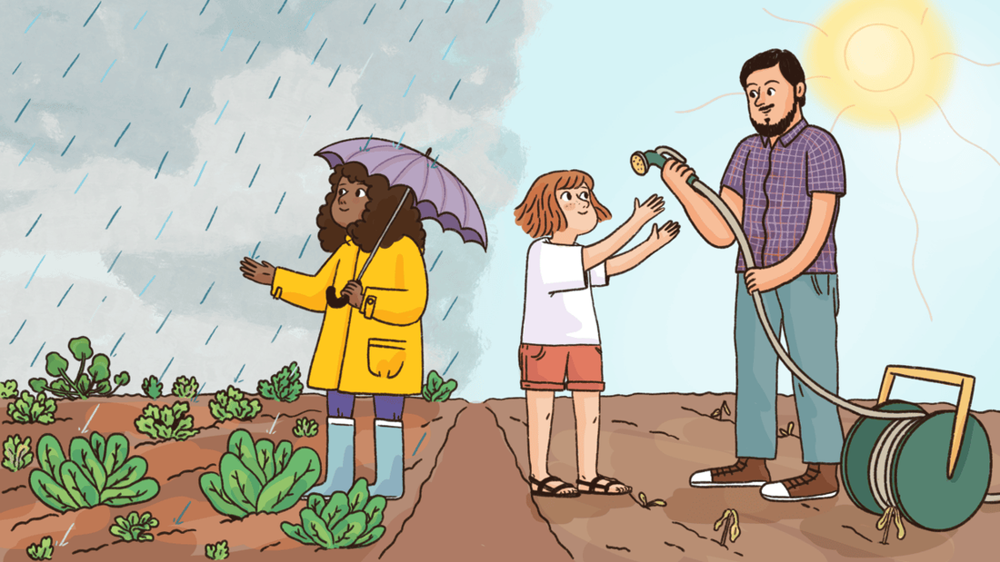

Guido Neidhöfer
Research
My research focuses on applied microeconometrics, education, labour, migration and development economics.
I am particularly interested in understanding the causes and consequences of economic inequality and social mobility.
I am particularly interested in understanding the causes and consequences of economic inequality and social mobility.

Created with https://scholargoggler.com/

Interview: "The economist asking how education impacts equality - Guido Neidhöfer is showing how all children benefit from a more just society" (published in BOLD)
UNDP Istanbul Regional Hub podcast: Colours of the Economy talks — Episode 7. A conversation with Regional Chief Economist Şebnem Şahin about social mobility, equality of opportunity and their role in economic growth and inclusive development.
ZEW podcast: Wann lohnt sich Bildung? (11 September 2026, in German). A conversation with Bastian Thüne about educational mobility, equal opportunities and regional innovation.
Podcast episode on inequality of opportunity and economic growth (in German) - #ZEWPodcast: Welche Bedeutung hat Chancengleichheit für Wirtschaftswachstum?
Faculti.net video-interview on Social Mobility and Economic Development.
TV interview with #CiudadU - Canal 10 on educational inequalities during the pandemic (in Spanish).
Recent Discussion Papers and Policy Reports on ZEW Homepage:https://www.zew.de/de/team/gne/ Google Scholar Page:https://scholar.google.de/citations?user=Qut4z9EAAAAJ&hl=en&oi=ao
Selection of blog-articles, policy reports and other publications:
Growing Educational Gaps in Latin America: How to Avoid the Most Lasting Scar from COVID-19 (with Nora Lustig and Mariano Tommasi), Future of Work in the Global South - Policy Brief, 2021.
"Back to the 1960s? Education May Be Latin America’s Most Lasting Scar from COVID-19" (with Nora Lustig and Mariano Tommasi) in Americas Quarterly, 2020. Spanish version in El Tiempo (Colombia) here, Portuguese version in Estadao (Brazil) here
"Rethinking Schooling - On the effects of school closures on the competence development of primary school children and the need for equality in education provision" (with Maximilian Bach, Sarah McNamara and Friedhelm Pfeiffer) ZEW expert brief No. 20-13, 2020
German version: Schule neu denken - Zu den Auswirkungen von Schulschließungen auf die Kompetenzentwicklung von Grundschülern/-innen und zur Wiederherstellung des gefährdeten Gleichheitsanspruchs der Bildungspolitik, ZEW-Kurzexpertise Nr. 20-13.
"COVID-19 and Inequality" (with Sarra Ben Yahmed, Lorenzo Cappellari, Daniele Checchi, Miles Corak, Stephen Jenkins, Michèle Tertilt and Mariano Tommasi) ZEW policy brief Nr. 20-05, 2020.
"Long run consequences of the COVID-19 pandemic on social inequality" in Lustig, N. & Tommasi, M. (2020). El COVID-19 y la protección social de los grupos pobres y vulnerables. UNDP.
"El impacto del COVID-19 sobre la desigualdad, la pobreza y la movilidad intergeneracional" in Factor Trabajo (IADB Blog)
"Kita-Besuch von Kindern aus nach Deutschland geflüchteten Familien verbessert Integration ihrer Mütter" (with Ludovica Gambaro and C. Katharina Spieß) DIW Wochenbericht, 2019.
"Educational inequality and social mobility in Latin America" in BOLD (Blog on Learning and Development)
"Desigualdad educativa y movilidad social en América Latina: La historia de cinco décadas" in Vox LACEA
"Italiani in Germania: sulla buona strada dell‘integrazione" in Neodemos. Winner of the award "Neodemos e i giovani" 2015.
"Der Apfel fällt nicht weit vom Stamm: Über Chancengleichheit und Aufstiegschancen in Deutschland" in Inequalitics
"Quando parlare della scuola diventa un tabù: La disuguaglianza sociale ed il sistema scolastico tedesco" in Eticaeconomia
"Back to the 1960s? Education May Be Latin America’s Most Lasting Scar from COVID-19" (with Nora Lustig and Mariano Tommasi) in Americas Quarterly, 2020. Spanish version in El Tiempo (Colombia) here, Portuguese version in Estadao (Brazil) here
"Rethinking Schooling - On the effects of school closures on the competence development of primary school children and the need for equality in education provision" (with Maximilian Bach, Sarah McNamara and Friedhelm Pfeiffer) ZEW expert brief No. 20-13, 2020
German version: Schule neu denken - Zu den Auswirkungen von Schulschließungen auf die Kompetenzentwicklung von Grundschülern/-innen und zur Wiederherstellung des gefährdeten Gleichheitsanspruchs der Bildungspolitik, ZEW-Kurzexpertise Nr. 20-13.
"COVID-19 and Inequality" (with Sarra Ben Yahmed, Lorenzo Cappellari, Daniele Checchi, Miles Corak, Stephen Jenkins, Michèle Tertilt and Mariano Tommasi) ZEW policy brief Nr. 20-05, 2020.
"Long run consequences of the COVID-19 pandemic on social inequality" in Lustig, N. & Tommasi, M. (2020). El COVID-19 y la protección social de los grupos pobres y vulnerables. UNDP.
"El impacto del COVID-19 sobre la desigualdad, la pobreza y la movilidad intergeneracional" in Factor Trabajo (IADB Blog)
"Kita-Besuch von Kindern aus nach Deutschland geflüchteten Familien verbessert Integration ihrer Mütter" (with Ludovica Gambaro and C. Katharina Spieß) DIW Wochenbericht, 2019.
"Educational inequality and social mobility in Latin America" in BOLD (Blog on Learning and Development)
"Desigualdad educativa y movilidad social en América Latina: La historia de cinco décadas" in Vox LACEA
"Italiani in Germania: sulla buona strada dell‘integrazione" in Neodemos. Winner of the award "Neodemos e i giovani" 2015.
"Der Apfel fällt nicht weit vom Stamm: Über Chancengleichheit und Aufstiegschancen in Deutschland" in Inequalitics
"Quando parlare della scuola diventa un tabù: La disuguaglianza sociale ed il sistema scolastico tedesco" in Eticaeconomia